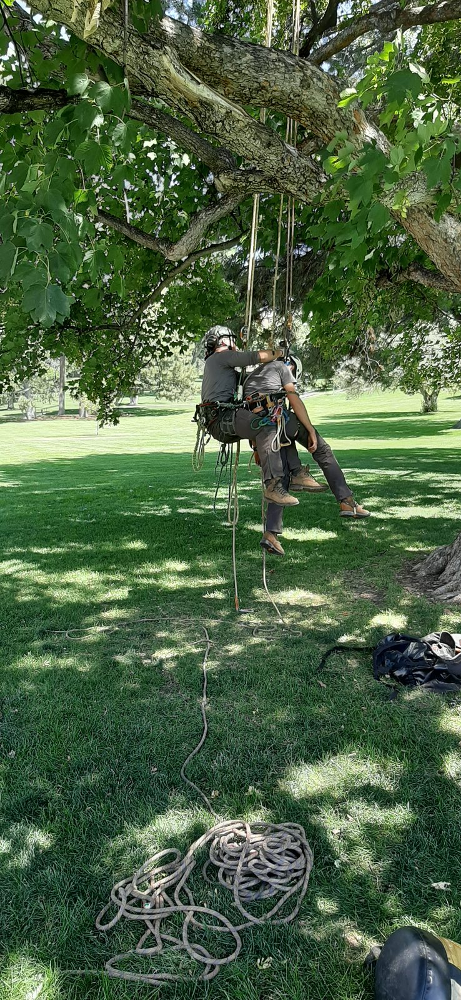
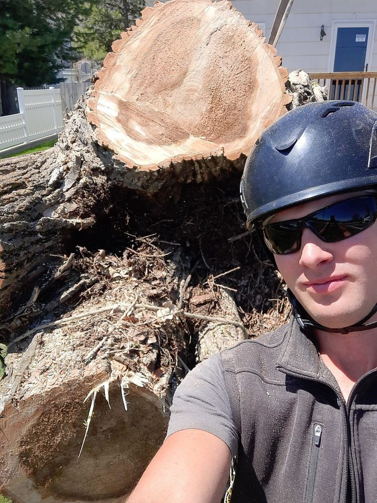
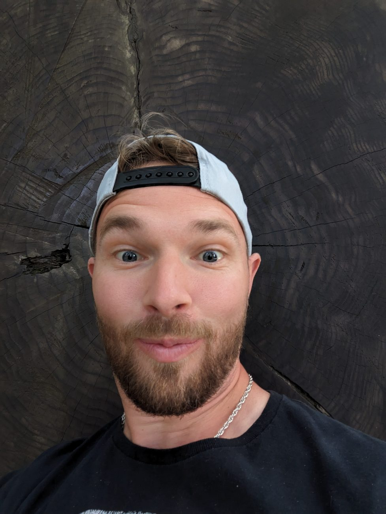
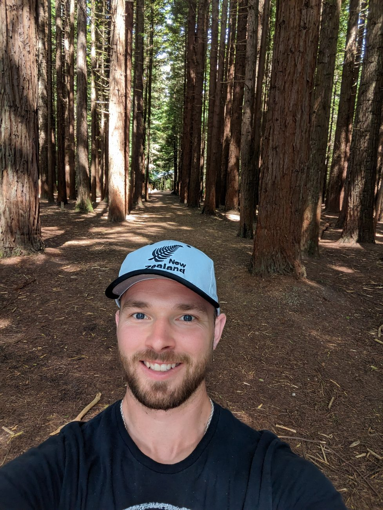
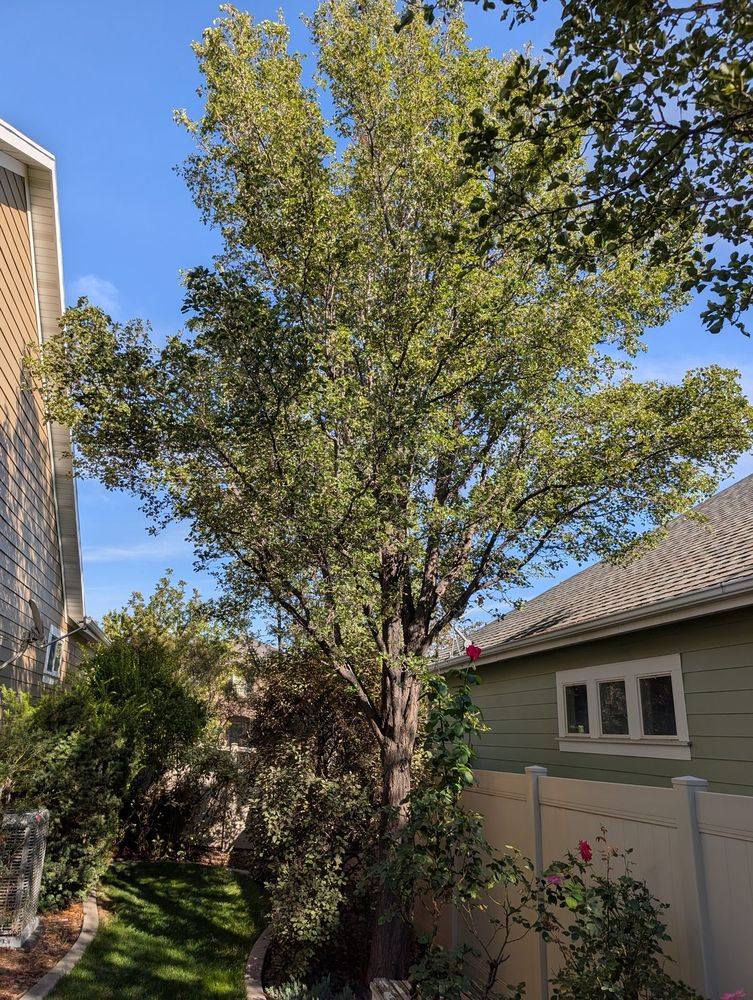
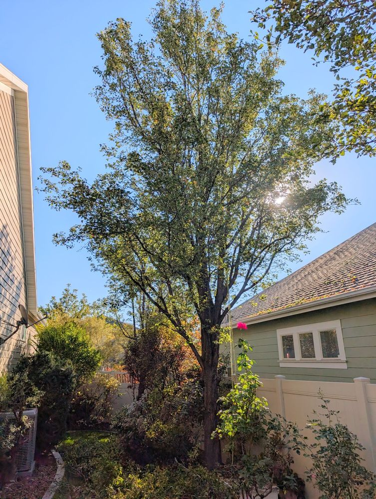
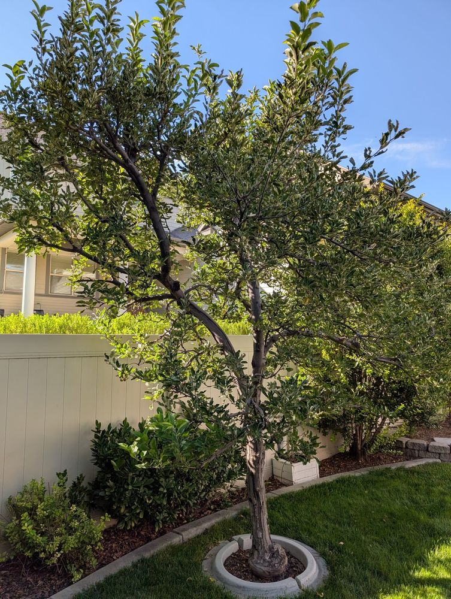
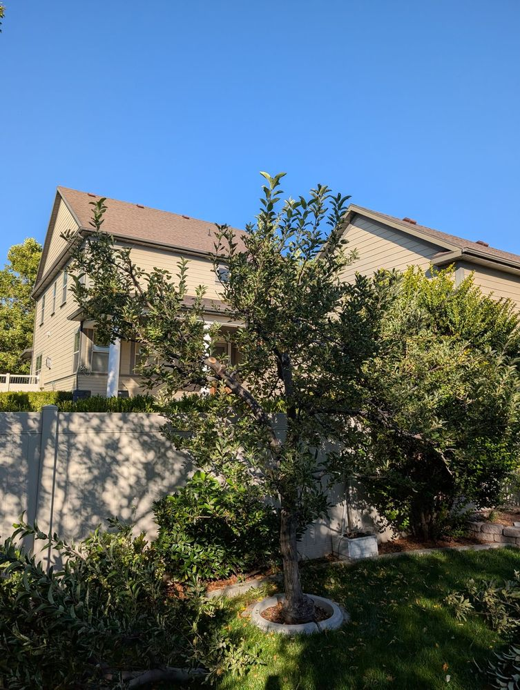
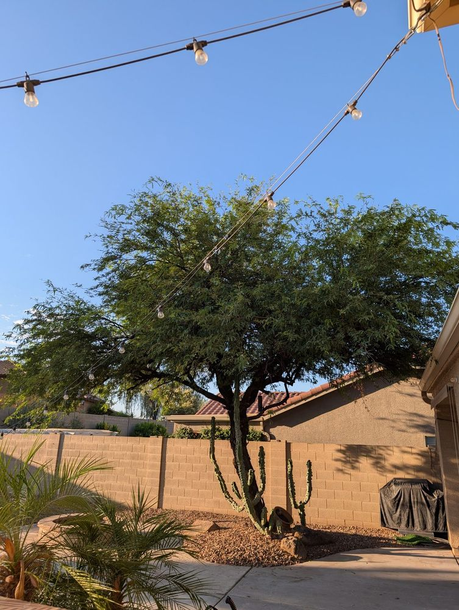
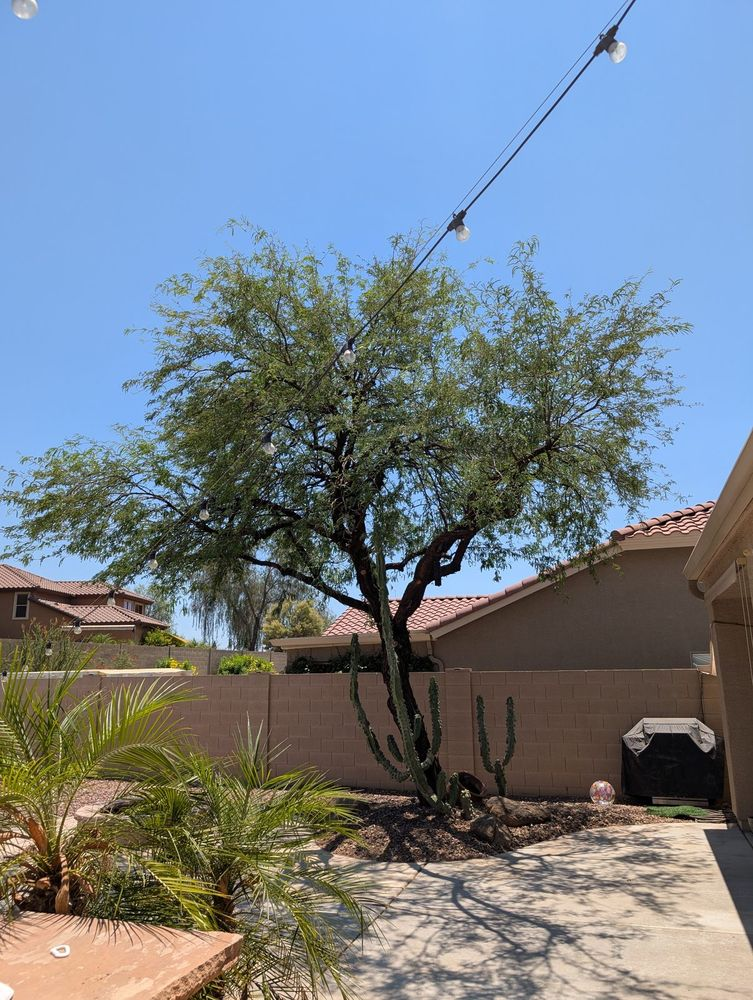

Pruning and climbing
Up in the canopy
Climbing is the right call for tight spaces, fruit trees, and anywhere a bucket truck would not fit or would tear up the lawn.
Family-run tree care and landscape design from Ben Ash, ISA Board Certified Master Arborist. With you from start to finish. Serving cities along the Wasatch Front, from Logan to Provo.
A subscription program that shapes young trees in their first 15 years. You get strong structure, clear sidewalks and streets, and none of the hacking later.
Planting plans that put every tree, lawn, garden, and path in the right place, starting with the soil.
A written care plan for every tree on the property, so the work happens at the right time and for the right reasons.
Through the simple form.
We confirm your scheduled visit. $95 for up to 1.5 hours, credited toward any work you book.
Scope in writing. Approve it or request a change.
All done by a Master Arborist.
We value your needs as much as the trees.
Every property has its own story: how you use the yard, what you want to see from the window, and what you can spend. We start there. The care plan fits your life and budget, and every tree still gets what it needs to stay healthy for decades.
We want both you and the trees to succeed.
It all starts at the roots. That means good soil, the right species, and the right spot, followed by steady training in the early years. You get clear explanations and a plan you can follow, so you're never guessing about what your trees need.
Together we create beauty and wonder. Trees embody this synergy.
A tree isn't an island. It's part of the whole landscape, along with the house, the walkways, the neighbors, and the wildlife. We design and care for trees as part of that whole, so they add shade, beauty, and value without fighting the space around them.
Ben doesn't just understand how a tree grows and how to care for it. He sees the job it does in the landscape and what it will give back once it's grown. His goal is to get the most out of those benefits while cutting down on hazards and conflicts with sidewalks, roads, and buildings.
After a walk-through or a conversation about what you want from your trees, Ben writes the prescription to get you there.
Pre-care is budget friendly and gentle. Emergency care is expensive and invasive.
Did you know there are fewer than 20 ISA Board Certified Master Arborists in Utah?
An ISA Board Certified Master Arborist, the top tier of the field, and former City Forester for American Fork. He has also managed properties for more than eight years, so he knows trees from the owner's side too. Ben handles every job himself, start to finish.
We would rather talk you out of a removal you do not need than charge you for one.
Off the clock he climbs in Utah tree-climbing competitions and turns up in the occasional local play. Same guy, more costumes.
Your trees should be a joy, not a headache. We find and fix the stress, so you don't have to.

Climbing is the right call for tight spaces, fruit trees, and anywhere a bucket truck would not fit or would tear up the lawn.
Dieback, borers, fire blight. Ben walks the property and puts a treatment plan in writing.

Sectional rigging for tight access, a hazard assessment before any cut, and cleanup when the work is done.
Species matched to local soils and winters, planted at the proper depth, with a one-year check-in.

ISA Board Certified Master Arborist and former City Forester for American Fork City.

When he is not working, Ben climbs in Utah tree-climbing competitions.

Before
After
Before
After
Before
AfterI highly recommend Ben Ash for your arborist needs! He trimmed several of my trees and gave me advice on other things that needed to be taken care of! When finished he did an amazing clean-up of the area. And I felt the price was reasonable as well. I will definitely use him again!
Did exactly what we wanted trimmed. Great job cleaned up trimming. Very satisfied with work will use him again
Ben has the whole world of trees and plants in his head. Anything I have to ask him about how to take care of a particular tree, why the plants in my garden are dying, or anything else, he just knows it! And he's easy to talk to and intuitive about how I want my yard space to look. Thank you!
Send a few photos and the story, and Ben will reach out to set up a visit.
Best for non-urgent jobs and anything with photos. Or use the consult form.